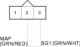
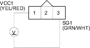
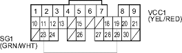

DTC P0108: MAP Sensor Circuit High Voltage
- Start the engine. Hold the engine at 3,000 rpm with no load (in Park or neutral) until the radiator fan comes on, then let it idle.
- Check the MAP with the scan tool.
Is about 101 kPa (760 mmHg, 30 in.Hg) or higher, or about 2.9 V or higher indicated?
YES |
- Go to step 3. |
NO |
- Intermittent failure, system is OK at this time. Check for poor connections or loose wires at the MAP sensor and at the ECM/PCM. |

- Turn the ignition switch OFF.
- Disconnect the MAP sensor 3P connector.
- Connect the MAP sensor 3P connector terminals No. 2 and No. 3 with a jumper wire.

- Turn the ignition switch ON (II).
- Check the MAP with the scan tool.
Is about 101 kPa (760 mmHg, 30 in.Hg) or higher, or about 2.9 V or higher indicated?
YES |
- Go to step 8. |
NO |
- Replace the MAP sensor. |
- Remove the jumper wire.
- Measure voltage between the MAP sensor 3P connector terminals No. 1 and No. 3.

Is there about 5 V?
YES |
- Go to step 10. |
NO |
- Repair open in the wire between the ECM/PCM (A11) and the MAP sensor. |
- Turn the ignition switch OFF.
- Connect ECM/PCM connector terminals A11 and A19 with a jumper wire.

- Turn the ignition switch ON (II).
- Check the MAP with the scan tool.
Is about 101 kPa (760 mmHg, 30 in.Hg) or higher, or about 2.9 V or higher indicated?
YES |
- Substitute a known-good ECM/PCM and recheck (see page 11-313). If symptom/indication goes away, replace the original ECM/PCM. |
NO |
- Repair open in the wire between the ECM/PCM (A19) and the MAP sensor. |